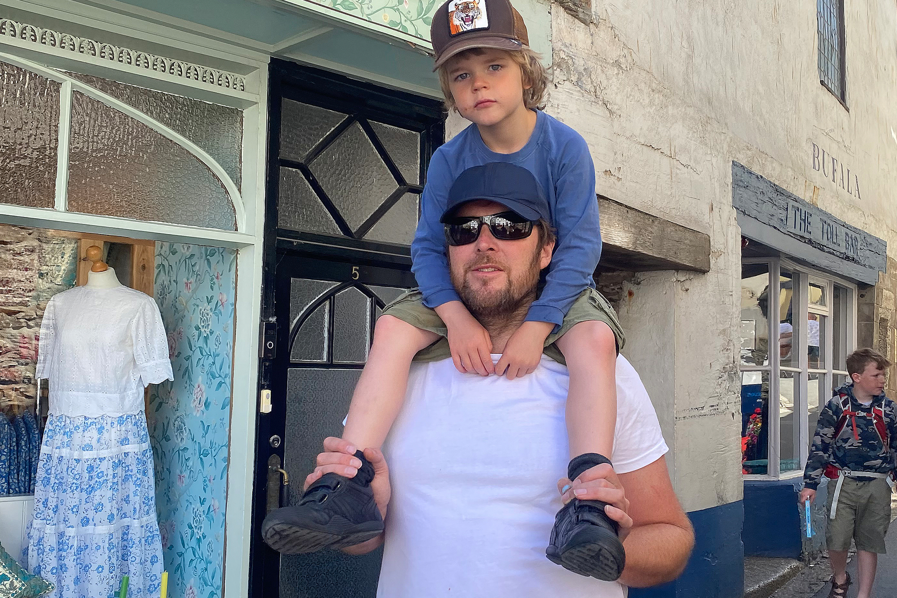

Connect
If you would like to work with me, please get in touch:
A bit about me
I'm reliable, friendly, passionate and driven. I have an independent and tenacious mindset. I listen well and build great things: brands that deeply resonate, apps and websites that enable intuitive comprehension and/or task completion.
I work well individually or as part of a team and can call on a large network of talented friends to complete project goals.
I have worked with a large range of design and advertising agencies across Soho, Shoreditch and Clerkenwell in London. I've crafted numerous products and have founded several businesses. I am naturally entrepreneurial and multi-skilled, a self-starter with an analytical penchant. I'm interested in anything and everything, bar Death metal and James Joyce's Ulysses.
Selected skills
- User-centric thinking
- Strategic design thinking
- UI/UX design and prototyping across native mobile and web
- Information architecture
- Ex-agency owner/manager
- Brand creation/crafting
- Logo design
- Typography
- Design systems, component libraries and guidelines
- AI integrated processes
- Portrait photoshoots
- Animation
Strategic skills
- Creating and leading discovery workshops with key stakeholders across web, naming and branding
- A broad range of web application experience, from very large, information-heavy websites to boutique, high-end fashion/arts/brochure sites
- Comprehensive knowledge of high-end print and proofing techniques
- Development of studio processes to optimise workflow
- Management of projects and teams
Technical skills
- Extensive experience of HTML, SASS, CSS and JS and liaising with developers
- React Native and Angular development environment experience
- Working knowledge of web servers, Git, Node, NPM, Mac systems, Networking, Command line, SVGs, SVG/SMIL animation
- Broad CMS experience
- Comprehensive understanding of website performance
- SEO implementation
Who I've worked for
I have worked with a broad range of clients, in a number of differing settings: from biotech companies to West End shows, medical technology to City law and finance firms; fashion, cultural/arts businesses, start-ups to large global businesses.
Selected agencies
- Landor Associates
- M&C Saatchi
- Impero
- MSL Group
- Brothers & Sisters
- AND
- Dewynters
- Claydon Healy Jones Mason
- Play
- SAS
Selected organisations
Other interests
When I'm not designing or coding, I spend time with my family, creating challenging lego custom builds, playing football and generally larking around with my kids. I do a bit of interior design for myself and friends, and also like to do the physical 'graft' on building projects too! I am passionate about efficiently designed, well-considered living spaces.
I also have an interest in theology, writing children's books and generally helping others; nature, day dreaming and design/art history and evolution; practical jokes, theology, philosophy, psychology and bourbon; Manga, Futurism and Science fiction.